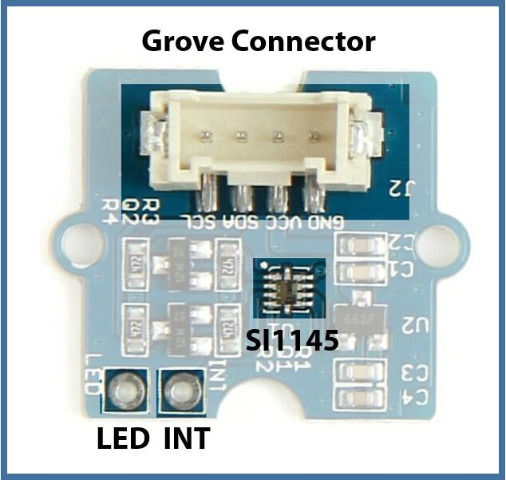
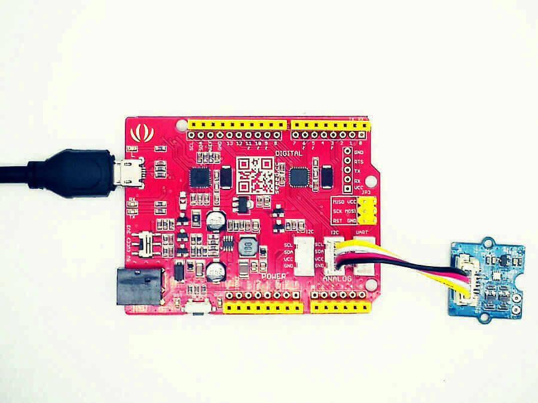
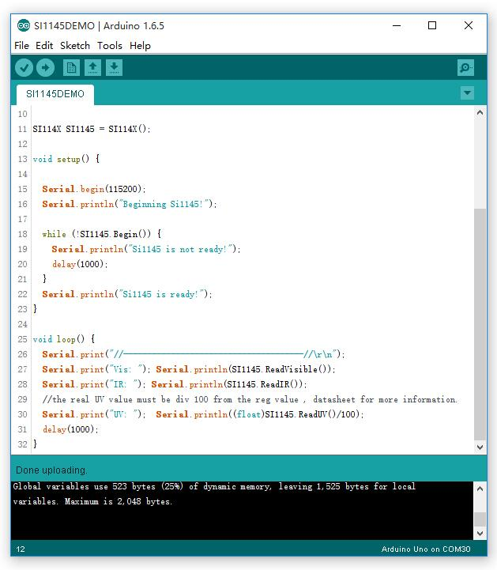
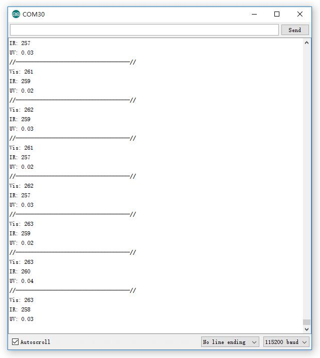
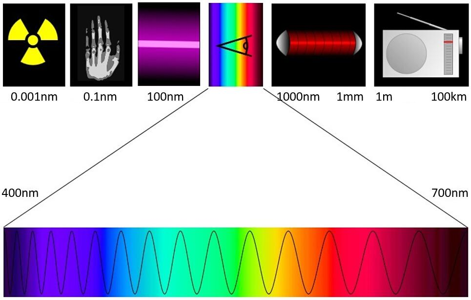

Grove - Sunlight Sensor is a multi-channel digital light sensor, which has the ability to detect UV-light, visible light and infrared light.
This device is based on SI1145, a new sensor from SiLabs. The Si1145 is a low-power, reflectance-based, infrared proximity, UV index and ambient light sensor with I2C digital interface and programmable-event interrupt output. This device offers excellent performance under a wide dynamic range and a variety of light sources including direct sunlight.
Grove - Sunlight Sensor include an on-bard Grove connector, which help you to connect it your Arduino easily. You can use this device for making some project which need to detect the light, such as a simple UV detector.
I need a Grove - Sunlight Sensor
| Operating Voltage | 3.0-5.5V |
| Working current | 3.5mA |
| Wave length | 280-950nm |
| Default I2C Address | 0x60 |
| Operating Temperature | -45-85℃ |

After this section, you can make Grove - Sunlight Sensor run with only few steps.
Now we are making a simple demo to get data from Grove - Sunlight Sensor require following modules.
Seeeduino V4.2 is fully compatible with Arduino.
If this is your first time using Arduino, Please put hand on here to start your Arduino journey.
Just connect Grove - Sunlight Sensor into I2C connector of Seeeduino v4.2
As shown below:

Note that if you need a plug more modules on main control board, you may need a Grove base shield which will make your work easy.
Click here to download the library and decompress it to any libraries folders of Arduino,
You will notice there's "-master" in the end of the library name, just remove it.
Launch Arduino IDE and click File>Examples>Grove_Sunlight_Sensor>SI1145DEMO to open the test code.

Click Tools>Board to choose Arduino UNO and select respective serial port.
Now click Upload(CTRL+U) to burn testing code. Please refer to here for any error prompt and you can also add comment on forum
After upload completed, Open Serial Monitor of your Arduino IDE, you can get the data:

Note:
Now, put Grove - Sunlight Sensor under the sun to see if it's a nice day.
The content of this chapter is got from Wikipedia - Spectrum, click to view the original page.
A spectrum (plural spectra or spectrums[1]) is a condition that is not limited to a specific set of values but can vary infinitely within a continuum. The word was first used scientifically within the field of optics to describe the rainbow of colors in visible light when separated using a prism. As scientific understanding of light advanced, it came to apply to the entire electromagnetic spectrum.
Spectrum has since been applied by analogy to topics outside of optics. Thus, one might talk about the spectrum of political opinion, or the spectrum of activity of a drug, or the autism spectrum. In these uses, values within a spectrum may not be associated with precisely quantifiable numbers or definitions. Such uses imply a broad range of conditions or behaviors grouped together and studied under a single title for ease of discussion.
In most modern usages of spectrum there is a unifying theme between extremes at either end. Some older usages of the word did not have a unifying theme, but they led to modern ones through a sequence of events set out below. Modern usages in mathematics did evolve from a unifying theme, but this may be difficult to recognize.

The content of this chapter is got from Wikipedia - Lumen (unit), click to view the original page.
The lumen (symbol: lm) is the SI derived unit of luminous flux, a measure of the total "amount" of visible light emitted by a source. Luminous flux differs from power (radiant flux) in that luminous flux measurements reflect the varying sensitivity of the human eye to different wavelengths of light, while radiant flux measurements indicate the total power of all electromagnetic waves emitted, independent of the eye's ability to perceive it. Lumens are related to lux in that one lux is one lumen per square meter.
For some examples:
The content of this chapter is got from Wikipedia - Ultraviolet index, click to view the original page.
The ultraviolet index or UV Index is an international standard measurement of the strength of sunburn-producing ultraviolet (UV) radiation at a particular place and time. The scale was developed by Canadian scientists in 1992, then adopted and standardized by the UN's World Health Organization and World Meteorological Organization in 1994. It is primarily used in daily forecasts aimed at the general public, and is increasingly available as an hourly forecast as well.
The UV Index is designed as an open-ended linear scale, directly proportional to the intensity of UV radiation that causes sunburn on human skin. For example, if a light-skinned individual (without sunscreen or a suntan) begins to sunburn in 30 minutes at UV Index 6, then that individual should expect to sunburn in about 15 minutes at UV Index 12 – twice the UV, twice as fast.
The purpose of the UV Index is to help people effectively protect themselves from UV radiation, which has health benefits in moderation but in excess causes sunburn, skin aging, DNA damage, skin cancer, immunosuppression,[1] and eye damage such as cataracts (see the section Human health-related effects of ultraviolet radiation). Public health organizations recommend that people protect themselves (for example, by applying sunscreen to the skin and wearing a hat and sunglasses) if they spend substantial time outdoors when the UV Index is 3 or higher; see the table below for more-detailed recommendations.
When the day's predicted UV Index is within various numerical ranges, the recommendations for protection are as follows:
| UV Index | Media graphic color | Risk of harm from unprotected sun exposure, for the average adult | Recommended protection |
|---|---|---|---|
| 0–2.9 | Green | "Low" | Wear sunglasses on bright days; use sunscreen if there is snow on the ground, which reflects UV radiation, or if you have particularly fair skin. |
| 3–5.9 | Yellow | "Moderate" | Take precautions, such as covering up, if you will be outside. Stay in shade near midday when the sun is strongest. |
| 6–7.9 | Orange | "High" | SPF 30+ sunscreen, wear a hat, reduce time in the sun within three hours of solar noon, and wear sunglasses. (Australian slogan: Slip-Slop-Slap-Seek-Slide.) |
| 8–10.9 | Red | "Very high" | Wear SPF 30+ sunscreen, a shirt, sunglasses, and a wide-brimmed hat. Do not stay in the sun for too long. |
| 11+ | Violet | "Extreme" | Take all precautions: Wear SPF 30+ sunscreen, a long-sleeved shirt and trousers, sunglasses, and a very broad hat. Avoid the sun within three hours of solar noon. |
Cautionary notes
When interpreting the UV Index and recommendations, be aware that: